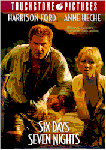

Contents | Features | Reviews | Books | Archives | Store |
 |
|
| Movie Credits | Buy It! |
Six Days, Seven Nights
Review by Carrie
Gorringe
Posted 12 June 1998
|  | Directed by Ivan Reitman Starring
Harrison Ford, Anne Heche, Screenplay by Michael Browning |
Six Days, Seven Nights was destined to be a summer movie event even without the assurance of Harrison Ford’s name on the marquee. Recall the combination of horror and amusement that arose last year, if you will, when rising actress Anne Heche chose to "come out" and declare her relationship with Ellen DeGeneres very shortly after Heche had been chosen to play the lead opposite Ford (if memory serves this writer correctly, the two announcements occurred, with ironic serendipity, on the very same day). All of the pundits-that-be declared, unequivocally and without the slightest hesitation, that Heche had committed professional suicide. Not only was she tagged with the "stigma" of being openly lesbian, but, by so declaring herself, she was setting the audience up not to take her seriously as the other half of a heterosexual cinematic duo. Her part would become incredible in the worst sense of the word. The cancellation of DeGeneres’ show by ABC earlier this year only increased the prognoses of doom. By all accounts, Heche would have been better served by confessing to acts of serial murder; at least she would have gotten a book deal or two and at least one TV movie-of-the-week, not to mention notoriety of a more immortal sort than what she was currently generating.
 Well, the results
are in and the sexual-orientation paranoiacs have been proven wrong, insofar as her
on-screen persuasiveness is concerned. Ford’s name might come first in the credits,
but Six Days is really about Heche’s real coming out – as a comedic
actress. She is by turns perky, resourceful, gutsy, helpless, and vulnerable – and
convincingly so. In short, Heche has proven herself to be a true professional who can play
it straight when necessary, and at all levels. The real weight dragging down Six Days,
sadly enough, comes from Ford himself. The roguish charm and hard-earned sense of comedic
timing so prevalent in much of his earlier work (especially the Indiana Jones
series) are still intact, but someone must persuade Ford to lose that dreadful brush cut
he has chosen to inflict upon himself; with it, the nearly fifty-six-year old, who still
cuts one of the most elegant figures in Hollywood, takes on the appearance of someone ten
to fifteen years older. Having to constantly disregard an actor’s hairstyle and its
unfortunate visual side effects puts a strain on the character’s credibility.
Well, the results
are in and the sexual-orientation paranoiacs have been proven wrong, insofar as her
on-screen persuasiveness is concerned. Ford’s name might come first in the credits,
but Six Days is really about Heche’s real coming out – as a comedic
actress. She is by turns perky, resourceful, gutsy, helpless, and vulnerable – and
convincingly so. In short, Heche has proven herself to be a true professional who can play
it straight when necessary, and at all levels. The real weight dragging down Six Days,
sadly enough, comes from Ford himself. The roguish charm and hard-earned sense of comedic
timing so prevalent in much of his earlier work (especially the Indiana Jones
series) are still intact, but someone must persuade Ford to lose that dreadful brush cut
he has chosen to inflict upon himself; with it, the nearly fifty-six-year old, who still
cuts one of the most elegant figures in Hollywood, takes on the appearance of someone ten
to fifteen years older. Having to constantly disregard an actor’s hairstyle and its
unfortunate visual side effects puts a strain on the character’s credibility.
Now, to the comedic plot, the quality of which can be summed up as textbook in conception but clever in execution. It would be nothing new to suggest that there is nothing new in the idea of stranding two antagonistic characters on a presumably deserted island and oblige them to fight their own attraction to each other as well as a band of marauding pirates, lead by Morrison (without the eyepatch and the Jolly Roger, but with several large machine guns). This is your classic screwball comedy premise and director Reitman, as you might expect from someone who cut his teeth on films such as Ghostbusters, uses rather conventional camera setups to hurry things along, relying upon cinematographer Michael Chapman to provide the visual sparkle (which he does, quite handily). Being formulaic, however, is not the same thing as promoting monotony; you can follow the book while breaking the rules if the foundation is sufficiently strong. Reitman keeps the action sequences moving along, infusing them with the right amount of tension to do so. Novice screenwriter Browning has been watching his Capra and Stevens very carefully; he knows exactly what the audience wants and, rather than attempting to turn his knowledge of screwball comedy into a turgid dissertation on the subject, writing as if the subject matter was beneath him, or lapsing into self-consciousness, he does what any good parent might do, giving his child lots of love and an encouragement to soar. Turning an attentive ear to the dialogue in Six Days is instructive, because it’s one of the few occasions in current cinema where true, if simple, wit flourishes without embarrassment, as in the line provided to Ford concerning what steps a woman needs to take in order to excite a man ("She shows up!" he barks to the bewildered Heche). As with all good comedies, Six Days aptly illustrates the human condition without making the act of illustration too obvious.
Furthermore, Reitman does seem to possess the gift of persuading actors to give the best of themselves to relatively lightweight material (he achieved the tall order of turning Robert Redford into a screwball comedian in Legal Eagles), and, as discussed earlier, it happens yet again here. Even the annoyingly whiny David Schwimmer (from Friends) is effectively showcased here; his bland-as-white-bread persona serves him well as the would-be fiancé who is so hyperromantic that he would drive anyone away from him. Only Morrison, a fine actor (from Once Were Warriors) has been left to twist in the acting wind: he has less than ten complete lines in the entire film and his total screen time can be counted in about the same number of minutes. Even the Pamela Anderson flop Barb Wire treated him with more dignity than this film does; maybe he needs to call Heche’s agent.
Six Days, Seven Nights may not be the film that you would choose to include in your annals of desert-island films, but its adroit mix of action, humor and romance promise that you won’t get stranded in a bad movie-going experience. Like "Quinnie" (Ford’s character), it is simple and unpretentious, like a cool margarita on a hot summer night, and just as stimulating.
Contents | Features | Reviews | Books | Archives | Store
Copyright © 1999 by Nitrate Productions, Inc. All Rights Reserved.